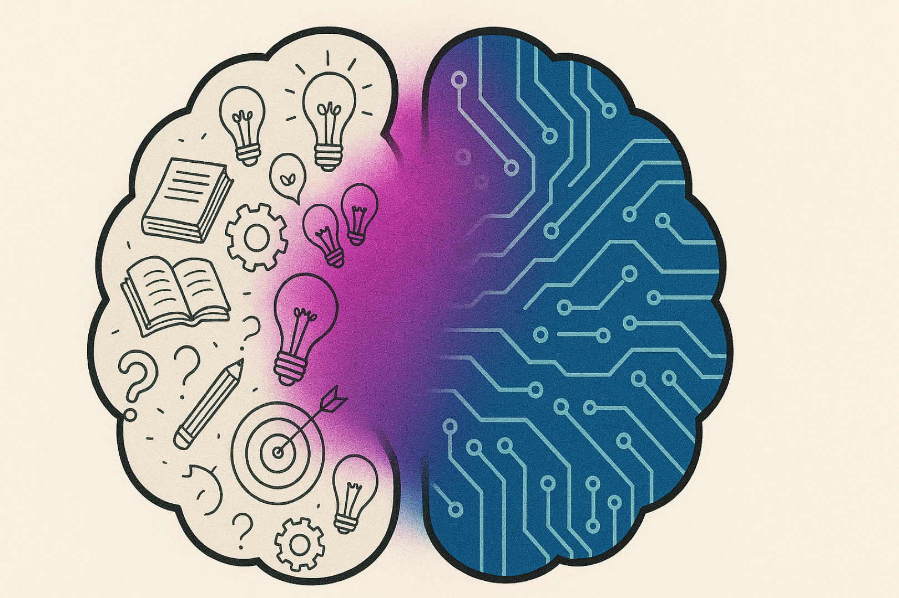
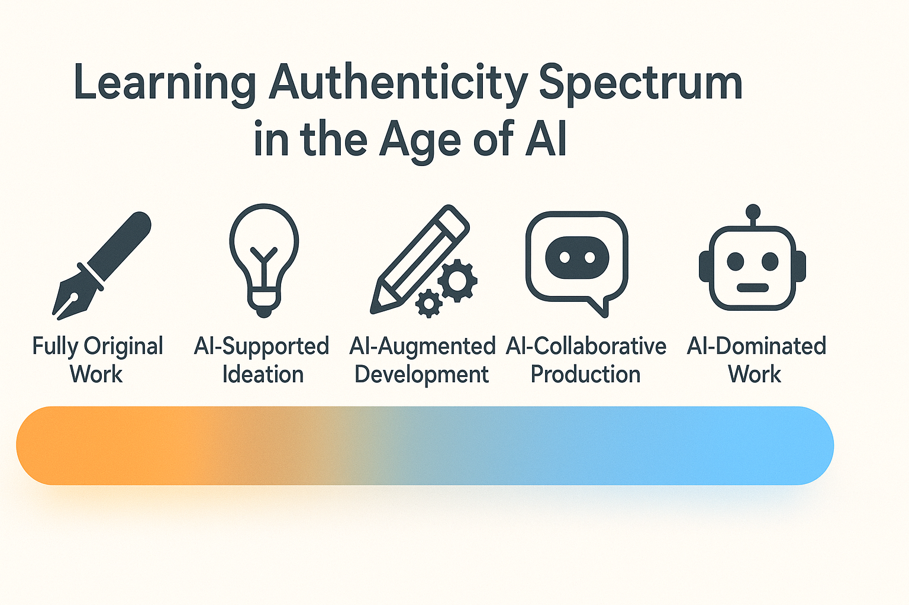

Authentic Learning in the Age of AI
Rethinking What "Authentic" Means
The traditional view of "authentic student work" has long been that of a solo effort unaided by peers, software, or internet searches. Yet today's learning landscape is being transformed by artificial intelligence—a tool that not only augments student work but can actively participate in its creation—compelling us to reconsider what authentic learning truly means.
Authenticity now exists on a spectrum. At one end stands the wholly original student creation; at the other, work shaped through engagement with AI tools. The crucial question isn't how much AI was used, but whether meaningful learning occurred through intentional choices about how and why AI was employed.
Mapping the Spectrum of Learning Authenticity
The conversation is shifting from whether or not students use AI (they will) to how they meaningfully incorporate these tools into their learning journey. Does the student maintain intellectual ownership? Is AI used as a shortcut or as a collaborative partner? Did learning outcomes materialize despite—or because of—AI assistance?
On one end of the spectrum stands fully independent work—a student creating an original project, solving a complex problem, or constructing an argument without any AI assistance. On the other end lies work predominantly generated by AI with minimal student input or creative or critical engagement. Increasingly, most student work will likely fall somewhere in the middle.
The learning authenticity spectrum serves as a guide for students to understand where they are in their learning journey, making their choices about AI more deliberate and transparent. Here is a brief description of key points along the spectrum.
- Fully Original Work: No AI or external aid; pure student thinking and creation without AI assistance.
- AI-Supported Ideation: Student uses AI to spark ideas or generate possibilities before building independently.
- AI-Augmented Development: Student directs the process, AI helps refine the work, and the student substantially revises the output.
- AI-Collaborative Production: Student crafts thoughtful prompts, curates outputs, evaluates and edits critically, and reflects on decisions.
- AI-Dominated Work: Minimal modification of AI-generated content showing little intellectual ownership.
Practical Implementation
The learning authenticity spectrum serves as both a communication tool and a design strategy for educators navigating AI integration in their classrooms. Utilizing this spectrum in this way requires thoughtful planning across several dimensions.
Setting Clear Parameters for Assignments
While the spectrum helps students understand the nature of their engagement with AI, educators need to establish concrete AI integration parameters for students. The following classification system is useful for this purpose.
- AI-free assignments preserve space for fully independent work, developing core skills, creativity, and authentic voice or products. These might include in-class writing exercises, personal reflections, or extemporaneous presentations where students must rely entirely on their own knowledge and abilities.
- AI-restricted assignments allow limited AI use for specific purposes. For example, students might use AI for initial brainstorming or final editing but must generate core content independently. This approach recognizes AI as a potential resource while maintaining student ownership of key processes.
- AI-optional assignments permit AI tools with proper citation and transparency. Here, students make intentional choices about when and how to employ AI assistance, documenting their process. This approach teaches discernment about when AI tools enhance versus diminish the learning experience.
- AI-required assignments deliberately incorporate AI competency as a learning objective. Students must demonstrate skill in effectively utilizing AI tools as part of the assignment requirements, preparing them for a world where AI literacy and skills are increasingly essential.
Making these parameters explicit reduces confusion and ensures all students understand what is expected.
Eduvators has developed an interactive tool that provides a dynamic visualization of the spectrum, with these parameters incorporated, along with more specific guidance, including teaching recommendations, assessment considerations, instructional design suggestions, and learning benefits and practical applications for students.
Learning Authenticity Spectrum (in the Age of AI) - Interactive Tool Link
Designing for the Full Spectrum of Authentic Learning
Effective education in the AI era requires designing experiences across the entire authenticity spectrum—from fostering wholly original student work to guiding thoughtful AI collaboration.
Cultivating Spaces for Original Student Work
Research shows the continued importance of independent creation in developing confidence and core skills. The following assignment types particularly encourage original work by leveraging students' motivations and unique capabilities.
Unplugged Challenges are time-bound, in-class activities where students solve problems without AI assistance. For example, a teacher might have students analyze an unfamiliar poem during class, working through interpretations in real-time without reference materials. These activities build confidence in students' innate capabilities while developing critical thinking under constraints that AI-assisted work could undermine.
Personal Experience Projects draw from lived experiences that AI cannot access. An instructor might ask students to conduct community interviews examining local impacts of economic change, then connect these firsthand accounts to theoretical frameworks.
Reusable/Shareable Artifacts engage students in creating enduring resources that extend beyond the classroom. A computer science instructor might have students develop open-source documentation for emerging technologies, contributing to a knowledge commons that benefits broader communities. Unlike AI-generated content, these student-created resources reflect genuine implementation experiences and peer-to-peer communication. This approach recognizes that today's students increasingly value creating work with lasting impact and social utility. The resulting sense of purpose often drives deeper engagement than traditional assignments, where the instructor is the primary or sole consumer.
Curiosity-based Inquiry allows students to pursue questions about topics of personal interest. Rather than assigning predetermined research questions. For environmental science, a teacher might guide students in developing their own investigations based on local ecological concerns. While AI can answer questions, it cannot experience genuine curiosity—the intrinsic desire to know something simply because it matters personally.
Multimodal Expression Projects encourage communication through varied media formats. A history teacher might offer students options to create podcasts, visual narratives, or interactive timelines rather than traditional essays. These approaches develop versatile communication skills while allowing students to leverage their unique strengths. While AI can generate text in a range of styles, it cannot authentically represent a student's personal voice, creative perspective, or emotional connection to material across different media formats.
Real-World Assignments mirror professional practices through simulations or community-based problem-solving. A business ethics course might partner with local organizations to analyze actual ethical dilemmas, with students developing recommendations that address stakeholder concerns. AI lacks the contextual understanding and ethical judgment required for navigating complex real-world situations where stakeholders have competing interests and emotions. These experiences bridge classroom learning with external applications through work that resembles future professional environments where human judgment remains irreplaceable.
Guiding Thoughtful AI Integration
As we move along the continuum toward AI-collaborative work, educators can design assignments that transform AI from a shortcut into a meaningful learning partner.
One effective approach begins with AI-generated starting points, followed by substantial student development. For instance, a teacher might have students use AI to generate three different introductory paragraphs, then analyze the strengths and weaknesses of each before crafting their own superior introduction that incorporates effective elements while addressing limitations.
Another strategy asks students to critically evaluate and improve upon AI outputs. In a political science course, students might prompt AI to analyze a complex policy issue, then identify gaps, biases, or oversimplifications in its analysis. Students would then develop a more nuanced perspective that addresses these limitations, demonstrating their deeper understanding.
Building simulations or scenarios with AI creates powerful learning opportunities. In a healthcare education program, students use AI to generate diverse first aid scenarios with varying complications and situational factors. Students then analyze each scenario, identify appropriate interventions, and practice their decision-making skills in responding to these AI-generated situations. This approach allows students to encounter a wider range of potential scenarios than traditional case studies might provide, preparing them for the complexity of real-world healthcare challenges. Similarly, urban planning students might use AI to generate multiple development scenarios for a neighborhood based on different policy approaches, then evaluate the social, economic, and environmental impacts of each scenario.
Comparing AI-created work with personal work also proves valuable. A creative writing instructor might have students write a short story independently, then generate an AI version based on the same prompt. Students would then analyze differences in style, complexity, creativity, and emotional resonance, gaining insight into both the capabilities of AI and the qualities that make human writing distinctive.
Positioning AI input as one option among many in the revision process represents another thoughtful integration strategy. During peer review sessions, students might receive feedback from classmates, the teacher/instructor, and an AI tool, then reflect on the value of each source before deciding which suggestions to incorporate. This approach teaches discernment while maintaining student agency in the writing process.
Assessment That Honors the Learning Process
When evaluating work created with AI assistance, traditional assessment approaches often fall short. Instead, educators need evaluation frameworks that focus on student engagement and learning rather than merely policing AI use. A holistic assessment framework considers four key dimensions:
Intent examines why the student used AI in this particular situation. Was it employed strategically to overcome a specific challenge or to bypass learning entirely? A history student who uses AI to help translate primary source documents in another language demonstrates purposeful intent aligned with learning goals. Conversely, a student who simply prompts AI to "write my essay about the French Revolution" shows little meaningful engagement.
Process evaluates the student's level of engagement with both the AI tool and the content. Did they critically evaluate AI outputs or simply accept them wholesale? For example, a physics student who iteratively refines their prompts to generate increasingly sophisticated simulations, then modifies those outputs based on their understanding of physical principles, demonstrates deep process engagement.
Reflection looks for metacognitive awareness about the learning journey. Can students explain their decisions and thinking process? A student who articulates why they accepted some AI suggestions about stylistic elements while rejecting others based on their understanding of the author's voice shows sophisticated reflection on their choices.
Learning Value assesses whether AI integration deepened or diluted understanding and skill development. Did the intended learning outcomes materialize despite—or because of—AI assistance? A data science student who uses AI to help clean and organize complex datasets, allowing them to focus on higher-level analysis and interpretation, may actually achieve deeper learning through the AI partnership.
Here are examples of assessment methods that effectively capture these dimensions:
- Process artifacts - provide evidence of the student's production journey. Instructors might require submission of drafts, prompt logs, or revision histories alongside final products. These artifacts reveal how ideas evolved and what role AI played in their development. For example, a professor might ask students to submit screenshots of their AI interactions along with annotations explaining their prompt choices and how they modified the resulting content.
- Think-aloud reflections - require students to explain their decision-making process, including when and why they used or rejected AI suggestions. A mathematics teacher might have students record short videos walking through their problem-solving approach, noting where AI helped identify errors or suggest alternative approaches, and explaining how they verified the validity of these suggestions.
- AI use declarations - ask students to describe what AI tools were used, how they were employed, and what was modified. Rather than treating these as confessional documents, they serve as opportunities for students to demonstrate thoughtful tool selection and critical engagement. A business ethics professor might include a template asking students to document which ethical frameworks they researched independently versus where they used AI to help synthesize complex regulatory information.
- Learning value rubrics - shift focus from the end product to the quality of thinking, synthesis, and ethical reasoning demonstrated. Instead of traditional rubrics that might inadvertently reward polished AI-generated content, these tools evaluate the uniquely human aspects of learning. A philosophy instructor might assess how students effectively integrated diverse philosophical traditions into their own coherent worldview rather than simply reproducing textbook explanations of those traditions.
Essential AI-Aware Literacies for Today's Learners
As AI becomes increasingly integrated into educational and professional environments, students need specific competencies to navigate this landscape while maintaining their creative and intellectual agency. These AI literacies represent practical skills that prepare students to become responsible users who can harness these tools' potential while preserving their own capabilities.
AI fluency involves understanding how large language models and other AI systems function, including their capabilities, limitations, and potential biases. This knowledge enables students to make informed choices about when AI tools might enhance their work versus when they might introduce problematic elements. A student demonstrating AI fluency might recognize that an AI system trained primarily on Western literary traditions would be an inappropriate tool for analyzing Indigenous storytelling traditions.
Critical evaluation of AI-generated content helps students spot hallucinations, inaccuracies, and rhetorical manipulation in AI outputs. Rather than universally accepting information from AI systems, students with this literacy can effectively analyze and verify claims. A journalism student might cross-reference AI-generated research summaries against primary sources, identifying instances where the AI has oversimplified complex findings or made connections not supported by the original research.
Data ethics literacy encompasses respecting privacy, intellectual property, attribution standards, and considering broader societal impacts when using AI systems. These ethical foundations guide responsible use that respects both the creators of content that AI systems have been trained on and the dignity of individuals whose works might be processed. A healthcare administration student might recognize the ethical implications of using AI to analyze patient data and implement appropriate safeguards for privacy and consent.
Effective prompting and AI interaction skills transform interactions with AI from simple queries to sophisticated dialogues that advance learning goals. Students who develop expertise in crafting thoughtful, specific inputs and crafting AI dialogue can steer generative tools with precision, turning AI from a mere shortcut into a genuine partner. An art history student might guide an AI system to help analyze specific compositional elements across different artistic movements while maintaining their own interpretive authority.
By developing these literacies, students become empowered users of AI rather than passive consumers. They learn to thoughtfully incorporate these tools into their learning process while maintaining critical distance and intellectual independence. Educators can foster these literacies through explicit instruction, modeling, and creating assignments that require students to practice these skills.
Moving Forward: Honoring Student Agency and Learning Authenticity with AI Integration
The future of authentic learning isn't about restricting AI—it's about amplifying student agency amid AI and the emergence of other intelligent tools. The capabilities worth cultivating are precisely those machines can't replicate: intellectual curiosity, empathetic understanding, ethical reasoning, and the uniquely human capacity to forge unexpected connections.
When students remain at the center—questioning, creating, and curating with intention—their work maintains authenticity regardless of which tools support the process. As educators, our challenge lies in designing learning experiences that help students navigate this spectrum thoughtfully, developing both independent thinking and wise collaboration with AI. Marcy Drummond, Eduvators Managing Director.
Note: This article emerged from my own practice at the AI-Collaborative Production point on the spectrum—engaging in an iterative process with AI while maintaining intellectual ownership through critical evaluation and deliberate direction of the content. Marcy Drummond, Eduvators Managing Director